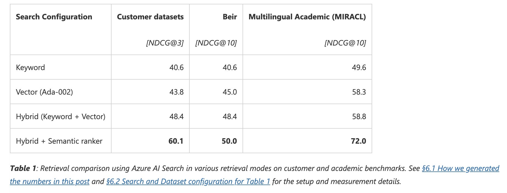

はじめに
2024年1月24日に発売される「Azure OpenAI Service ではじめる ChatGPT/LLM システム構築入門」を著者の一人である立脇さんから献本頂いたので，書評を書いていきます！
改めて，出版おめでとうございます🎉
Azure OpenAI Serviceではじめる ChatGPT/LLMシステム構築入門（AOAIドーナツ本）を著者の立脇さんから献本頂きました🎉
— asteriam (@asteriam_fp) January 20, 2024
Azure上でのChatGPTを用いたシステム構築の話はもちろんのこと、ガバナンスやResponsible AIにも言及していて興味深く読ませて頂いてます！後ほど書評ブログも書かせて頂きます。 pic.twitter.com/oRqcYAV0gr
書籍の目次
目次は以下のようになっていて，全体は4部構成（+付録）になっています．
- 第1部: Microsoft Azure での ChatGPT 活用
- 第1章: 生成 AI と ChatGPT
- 第2章: プロンプトエンジニアリング
- 第3章: Azure OpenAI Service
- 第2部: RAG による社内文章検索の実装
- 第4章: RAG の概要と設計
- 第5章: RAG の実装と評価
- 第3部: Copilot stack による LLM アプリケーションの実装
- 第6章: AI オーケストレーション
- 第7章: 基盤モデルと AI インフラストラクチャ
- 第8章: Copilot フロントエンド
- 第4部: ガバナンスと責任ある AI
- 第9章: ガバナンス
- 第10章: 責任ある AI
- 付録
- 付録 A: サンプルコード実行環境の準備
- 付録 B: ChatGPT の仕組み（詳細編）
内容の紹介と感想
各章の概要について簡単に触れつつ，個人的に興味深かった点や印象に残った点を紹介したいと思います．
本書は初めに読者の目的とレベル感に合わせてどの章から読めば良いかが示されていて，全体の見通しがクリアになるように設計されています．そのため，目的に合わせて必要な章を効率良く読めるでしょう．
では，各章の概要についてかいつまんで紹介したいと思います！
第1部: Microsoft Azure での ChatGPT 活用
第1部は，最初に生成 AI と ChatGPT 基礎的な概念と仕組みを紹介しています．ChatGPT がどういったタスクをこなすことができるかについてもまとめられていて，ユースケースの例もあるので，活用のイメージを膨らませることができます．
また，生成 AI の出力に関係してくるプロンプトの基本的な書き方の紹介，気をつけるべき観点が整理されていて，プロンプトエンジニアリングを学ぶことができます．
第1部の最後は，Azure OpenAI Service の使い方が書かれています．Open AI が開発した AI モデルをマネージドサービスとして使用することができ，Azure OpenAI の始め方が図を使って丁寧に解説されています．
第2部: RAG による社内文章検索の実装
第2部は，ChatGPT を使った社内文章検索システムを題材にして，RAG の説明から実際に Azure 上でどういったサービスを組み合わせてシステムを構築するかについても丁寧に説明されています．後半には，RAG の評価の仕方も記載されています．
また，Azure Machine Learning プロンプトフローを使って効率良くプロンプトの検証・開発をする方法も紹介されています．
第3部: Copilot stack による LLM アプリケーションの実装
第3部は，ChatGPT などの LLM を組み込んだアプリである Copilot を開発するための話が，Copilot フロントエンド・AI オーケストレーション・基盤モデルの3段階で紹介されています．
Copilot フロントエンドの説明では，UX 向上のためにストリーミング処理の実装や参考資料などが紹介されていて，ユーザビリティの重要性を教えてくれます．
第4部: ガバナンスと責任ある AI
第4部は，生成 AI のサービスや機能を開発・運用していく上でのガバナンスの話や責任ある AI に対する Microsoft の取り組みなどが紹介されています．ガバナンスの話では，認証周りや課金，アクセス制限など組織で活用していく上で考慮すべき問題を取り上げています．
興味深かった点/印象に残った点
ここからは個人的な感想を書いていこうと思います．
まず全体的に注釈で細く補足がなされていたり，参考文献が挙げられていてとても親切です．タイトルにも含まれるように Azure を使った内容にはなっていますが，プロンプトエンジニアリングや RAG の設計・評価，基盤モデルの話など ChatGPT/LLM をサービスに活用する上で知っておくべき一般的な内容についてもしっかりと説明がされていて，まだまだキャッチアップ不足の僕にはとても参考になりました！
後半ではガバナンスや責任ある AI (Responsible AI) を取り上げていますが，これらについて言及している書籍はまだまだ少ない状況なので，とても有益です．サービスとして機械学習を提供するのであれば，こういった内容についても理解を深め取り組んでいくべき（自戒を込めて）で，それを助ける参考文献が色々と記載されています．
特に個人的な推しポイントは3つあります．
1. RAG を使った検索システムの設計と評価
Retrieval-Augumented Generation (RAG) を使うメリットやアーキテクチャを最初に説明することで，これからどういったものを考えていくのかがわかりやすかったです．コンテキストが示されて体系的に説明がされるので，テックブログのように断片的なものよりは理解が進みやすいです．
特に検索システムの説明が厚くてとても良かったです！Azure AI Search を題材にしていますが，インデックス作成・ドキュメント検索の流れを図を用いて丁寧に解説されています．インデックス作成の流れは別の検索システムを使うにしても参考となります．特に RAG を使った検索では，ドキュメントの文字数と文の意味に基づいた検索が重要であるという内容がしっかり書かれていて理解が深まりました．
また，Azure AI Search では，フルテキスト検索とベクトル検索のハイブリッド検索を利用することができ，ハイブリッド検索とセマンティックランカーを行うことでより高精度な検索が実現可能とのことです（下図）．こういった柔軟な検索手法の組み合わせが，比較的簡単にマネージドサービスとして実装できるのは楽だなと感じます．

参考: Azure AI Search: Outperforming vector search with hybrid retrieval and ranking capabilities
RAG の評価についても書かれていて，RAG の評価では，検索精度の問題と生成精度の問題の２つが挙げられます．特に生成精度の評価はまだまだスタンダードな方法がなく難しいですが，その一例として，OSS で RAG 用の評価フレームワークである Ragas があるよと挙げられてます．単一のメトリクスで判断するのではなく，複数の組み合わせがおすすめされてて，関連性・一貫性・類似性の評価について解説もされています．評価方法どうすればいいかあまり理解していなかった自分にとっては良い示唆を貰えました！
2. オーケストレータ作成のための Azure Machine Learning プロンプトフロー
Azure Machine Learning プロンプトフローはローコードでオーケストレータを作成できるサービスで GUI/CLI で利用できるとのことです．
- 実行フローの可視化
- チームでの共有やデバッグ
- 複数のプロンプトを試せるプロンプトバリアント機能
- etc…
特に興味を持ったのは，プロンプトバリアント機能でプロンプトは色々と試行錯誤して良さげなものを探すと思いますが，これらを一度に複数パターンを定義できて実行できるとのことで，実験速度がめっちゃくちゃ上がりそうだなと感じました！改善しやすい仕組みが自分で整備しなくても整えられているので，やりたいことに集中でき，開発者体験としてとても良さそうに感じられました！
3. 責任ある AI (Responsible AI) の取り組み
Microsoft では，責任ある AI (Responsible AI) として，以下の6つの原則を掲げています．
- 公平性
- AI システムはすべての人を公平に扱う必要があります
- 信頼性と安全性
- AI システムは信頼でき安全に実行する必要があります
- プライバシーとセキュリティ
- AI システムは安全であり，プライバシーを尊重する必要があります
- 包括性
- AI システムはあらゆる人に力を与え，人々を結びつける必要があります
- 透明性
- AI システムは理解しやすい必要があります
- アカウンタビリティ
- AI システムにはアカウンタビリティが必要です
参考: 責任ある信頼された AI - Cloud Adoption Framework
詳細は上記参考ドキュメントを読むとわかりやすいです．これらを定義し，それをどのように実践するかといったことについてもきちんと公式ドキュメントとしてまとめられていて素晴らしいです．信頼性と安全性は MLOps とも関連性が高い項目ですね．
本書では，取り組みの紹介として，コンテンツフィルタリングの例があります．生成 AI が不正利用されるとサービスに大きな影響が及びます．これに対して，Azure OpenAI では入出力にフィルタリング機能が実装されていて，適切でない内容対しては処理がストップされるようです．こういったことをマネージドサービスとして提供してくれるのかと感心したと同時に，サービスを使う側にとって安心で心強いと感じました．仮にこういったことを自前で実装するとなると，かなりしんどくて（どういった項目を扱うか，実装や運用はどうするかなど），素早くサービスを展開しづらくなります．
気になった点
気になった点は特にないですが，強いて言うなら，LLM 開発する上で有用な Microsoft 製の OSS がいくつか紹介されていたので，それについて付録などでもう少し使い方や組み合わせ方があっても面白いかなと思いました．
おわりに
今回献本頂いて書籍を読むまで Azure, Azure OpenAI Service のことはほぼ知りませんでした🙇♂️
ただ本書を読んでいくことで，Azure OpenAI Service の使い勝手の良さや導入のしやすさなどはとても感じることができました！興味深かった点/印象に残った点でも書きましたが，Azure Machine Learning プロンプトフローを使った開発は非常に開発者体験が良さそうに感じるため，まだ時間が取れず，実際には触れていないのですが，これを機に是非触ってみたいと感じさせられるものでした💪
他にも Microsoft の OSS が所々で紹介されていて知らないものも多かったので，参考になりました！
- DeepSpeed
- Deep Learning モデルの学習・推論を高速化するフレームワーク
- Semantic Kernel
- LLM を自分のアプリに簡単に統合できる SDK
Azure を既に使ってる人はもちろんのこと，使ったことが無い人も本書を通して Azure OpenAI Service を使った ChatGPT/LLM のシステム開発に挑戦してみると楽しいと思います！
もしこれらに興味がある人は是非手に取って見て下さい！！